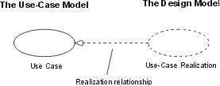
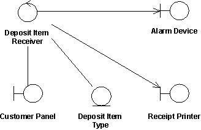

Artifacts >
Artifacts >
 Analysis & Design Artifact Set >
Analysis & Design Artifact Set >
 Design Model... >
Design Model... >
 Use-Case Realization >
Use-Case Realization >
 Guidelines
Guidelines
Artifacts >
Analysis & Design Artifact Set >
Design Model... >
Use-Case Realization >
Guidelines
Guidelines:
|
|
|
A use-case realization describes how a particular use case is realized within the design model, in terms of collaborating objects. |
A use-case realization represents the design perspective of a use case. It is an organization model element used to group a number of artifacts related to the design of a use case, such as class diagrams of participating classes and subsystems, and sequence diagrams which illustrate the flow of events of a use case, performed by a set of class and subsystem instances.
The reason for separating the use-case realization from its use case is that doing so allows the use cases to be managed separately from their realizations. This is particularly important for larger projects, or families of systems where the same use cases may be designed differently in different products within the product family. Consider the case of a family of telephone switches which have many use cases in common, but which design and implement them differently according to product positioning, performance and price.
For larger projects, separating the use case and its realization allows changes to the design of the use case without affecting the baselined use case itself.
For each use case in the use-case model, there is a use-case realization in the design model with a realization relationship to the use case. In the UML this is shown as a dashed arrow, with an arrowhead like a generalization relationship, indicating that a realization is a kind of inheritance, as well as a dependency (i.e. it could have been shown as a dependency stereotyped with «realize»).

A use-case realization in the design model can be traced to a use case in the use-case model.
For each use-case realization there may be one or more class diagrams depicting its participating classes. The figure below shows a class diagram for the realization of the Receive Deposit Item use case. A class and its objects often participate in several use-case realizations. It is important during design to coordinate all the requirements on a class and its objects that different use-case realizations may have.

The use case Receive Deposit Item and its class diagram.
For each use-case realization there is one or more interaction diagrams
depicting its participating objects and their interactions. There are two types
of interaction diagrams: Sequence diagrams and collaboration diagrams. They
express similar information, but show it in different ways. Sequence diagrams
show the explicit sequence of messages and are better when it is important to
visualize the time ordering of messages, whereas collaboration diagrams show
the communication links between objects and are better for understanding all of
the effects on a given object and for algorithm design. See Guidelines:
Sequence Diagram and Guidelines: Collaboration
Diagram below for more information.
|
Rational Unified
Process
|